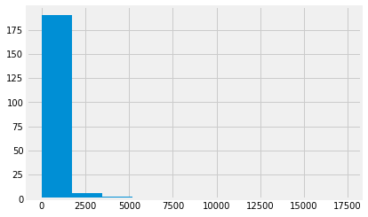
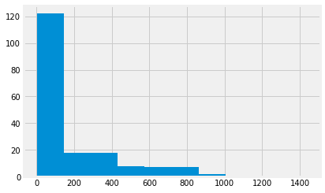
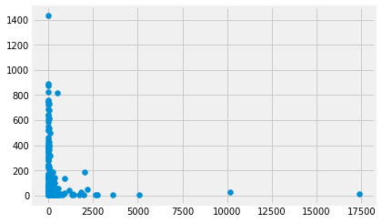
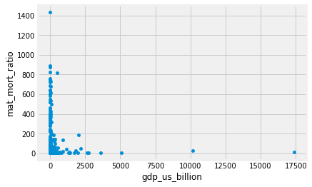
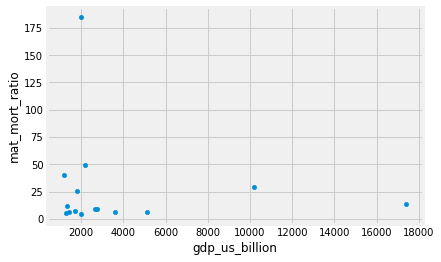
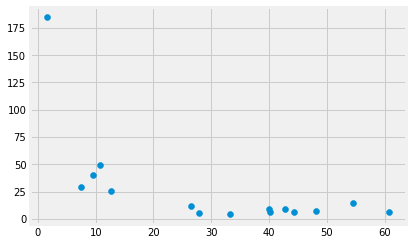

4.1 Introduction to data frames
Introduction to data frames
Pandas is a Python package that implements data frames, and functions that operate on data frames.
# Load the Pands data science library, call it 'pd'
import pandas as pd
We will also use the usual Numpy array library:
# Load the Numpy array library, call it 'np'
import numpy as np
Data frames and series
We start by loading data from a Comma Separated Value file (CSV file). If you are running on your laptop, you should download the gender_stats.csv file to the same directory as this notebook.
# Load the data file
gender_data = pd.read_csv('gender_stats.csv')
This is our usual assignment statement. The LHS is gender_data, the variable name. The RHS is an expression, that returns a value.
What type of value does it return?
type(gender_data)
pandas.core.frame.DataFrame
Pandas integrates with the Notebook, so, if you display a data frame in the notebook, it does a nice display of rows and columns.
gender_data
| country_name | country_code | fert_rate | gdp_us_billion | health_exp_per_cap | health_exp_pub | prim_ed_girls | mat_mort_ratio | population | |
|---|---|---|---|---|---|---|---|---|---|
| 0 | Aruba | ABW | 1.663250 | NaN | NaN | NaN | 48.721939 | NaN | 0.103744 |
| 1 | Afghanistan | AFG | 4.954500 | 19.961015 | 161.138034 | 2.834598 | 40.109708 | 444.00 | 32.715838 |
| 2 | Angola | AGO | 6.123000 | 111.936542 | 254.747970 | 2.447546 | NaN | 501.25 | 26.937545 |
| 3 | Albania | ALB | 1.769250 | 12.327586 | 574.202694 | 2.836021 | 47.201082 | 29.25 | 2.888280 |
| 4 | Andorra | AND | NaN | 3.197538 | 4421.224933 | 7.260281 | 47.123345 | NaN | 0.079547 |
| 5 | United Arab Emirates | ARE | 1.793000 | 375.027082 | 2202.407569 | 2.581168 | 48.789260 | 6.00 | 9.080299 |
| 6 | Argentina | ARG | 2.328000 | 550.980968 | 1148.256142 | 2.782216 | 48.915810 | 53.75 | 42.976675 |
| 7 | Armenia | ARM | 1.545500 | 10.885362 | 348.663884 | 1.916016 | 46.782180 | 27.25 | 2.904683 |
| 8 | American Samoa | ASM | NaN | 0.640500 | NaN | NaN | NaN | NaN | 0.055422 |
| 9 | Antigua and Barbuda | ATG | 2.082000 | 1.298213 | 1152.493656 | 3.676514 | 48.291463 | NaN | 0.098872 |
| 10 | Australia | AUS | 1.861500 | 1422.994116 | 4256.058988 | 6.292381 | 48.576707 | 6.00 | 23.444560 |
| 11 | Austria | AUT | 1.455000 | 407.494276 | 4930.298893 | 8.504276 | 48.556078 | 4.00 | 8.566294 |
| 12 | Azerbaijan | AZE | 1.980000 | 62.003001 | 956.709718 | 1.197249 | 46.157363 | 25.25 | 9.531856 |
| 13 | Burundi | BDI | 5.992250 | 2.876978 | 59.693830 | 4.433749 | 50.481971 | 747.25 | 9.907015 |
| 14 | Belgium | BEL | 1.755000 | 494.221836 | 4297.838005 | 8.221003 | 48.864675 | 7.00 | 11.228495 |
| 15 | Benin | BEN | 4.806750 | 8.778151 | 83.726190 | 2.206916 | 47.211127 | 417.50 | 10.293715 |
| 16 | Burkina Faso | BFA | 5.564500 | 11.753054 | 87.143009 | 3.021246 | 48.217520 | 384.25 | 17.597395 |
| 17 | Bangladesh | BGD | 2.193250 | 174.545099 | 85.968844 | 0.860447 | 50.460564 | 194.75 | 159.371214 |
| 18 | Bulgaria | BGR | 1.510000 | 53.797612 | 1266.857003 | 4.243437 | 48.310802 | 10.75 | 7.220151 |
| 19 | Bahrain | BHR | 2.065250 | 32.004011 | 2030.158316 | 2.976386 | 49.116838 | 15.25 | 1.349810 |
| 20 | Bahamas, The | BHS | 1.877250 | 8.688000 | 1727.128385 | 3.308626 | NaN | 81.50 | 0.381904 |
| 21 | Bosnia and Herzegovina | BIH | 1.267000 | 17.323327 | 941.504655 | 6.841021 | 48.634905 | 11.75 | 3.574396 |
| 22 | Belarus | BLR | 1.677000 | 64.782942 | 986.236757 | 3.876601 | 48.685741 | 4.00 | 9.480348 |
| 23 | Belize | BLZ | 2.594750 | 1.680325 | 471.967465 | 3.744844 | 48.317238 | 29.25 | 0.351764 |
| 24 | Bermuda | BMU | 1.617500 | 5.555624 | NaN | NaN | 48.423588 | NaN | 0.065101 |
| 25 | Bolivia | BOL | 2.995250 | 31.509324 | 381.007594 | 4.192031 | 48.464175 | 218.25 | 10.562803 |
| 26 | Brazil | BRA | 1.795250 | 2198.765606 | 1303.199104 | 3.773473 | 47.784577 | 49.50 | 204.159544 |
| 27 | Barbados | BRB | 1.792250 | 4.413080 | 1062.840088 | 4.828680 | 48.878181 | 28.00 | 0.283338 |
| 28 | Brunei Darussalam | BRN | 1.884000 | 15.719223 | 1795.924160 | 2.335194 | 48.523699 | 23.75 | 0.411581 |
| 29 | Bhutan | BTN | 2.061250 | 1.975145 | 277.526670 | 2.706908 | 49.572296 | 161.75 | 0.775905 |
| ... | ... | ... | ... | ... | ... | ... | ... | ... | ... |
| 186 | Turks and Caicos Islands | TCA | NaN | NaN | NaN | NaN | 48.846884 | NaN | 0.033703 |
| 187 | Chad | TCD | 6.211000 | 11.945942 | 69.904561 | 1.725194 | 42.929245 | 892.25 | 13.574024 |
| 188 | Togo | TGO | 4.620000 | 4.183610 | 71.263825 | 2.037809 | 48.270471 | 380.75 | 7.230904 |
| 189 | Thailand | THA | 1.516750 | 406.136904 | 581.927487 | 3.183842 | 48.213034 | 21.00 | 68.384986 |
| 190 | Tajikistan | TJK | 3.495750 | 8.036228 | 169.745970 | 1.976367 | 48.260680 | 33.25 | 8.363844 |
| 191 | Turkmenistan | TKM | 2.313750 | 37.973096 | 288.572644 | 1.349303 | 48.906879 | 43.50 | 5.465637 |
| 192 | Timor-Leste | TLS | 5.797750 | 1.361430 | 98.577296 | 1.140440 | 48.337367 | 240.25 | 1.212718 |
| 193 | Tonga | TON | 3.745750 | 0.439179 | 250.962504 | 3.987285 | 47.697931 | 129.25 | 0.105909 |
| 194 | Trinidad and Tobago | TTO | 1.782750 | 24.570947 | 1778.148073 | 3.071370 | NaN | 63.25 | 1.353877 |
| 195 | Tunisia | TUN | 2.140000 | 44.824374 | 782.950522 | 4.118771 | 48.142132 | 63.25 | 11.144409 |
| 196 | Turkey | TUR | 2.078000 | 895.175577 | 997.374772 | 4.189521 | 48.789477 | 17.50 | 77.034345 |
| 197 | Tuvalu | TUV | NaN | 0.036470 | 563.500592 | 15.506929 | 47.472414 | NaN | 0.010910 |
| 198 | Tanzania | TZA | 5.181250 | 44.935542 | 131.704162 | 2.648609 | 50.666580 | 429.50 | 52.281324 |
| 199 | Uganda | UGA | 5.822500 | 25.941461 | 132.892684 | 2.014349 | 50.099485 | 366.50 | 38.865339 |
| 200 | Ukraine | UKR | 1.510250 | 135.379275 | 628.579254 | 3.960185 | 48.984198 | 24.25 | 45.302704 |
| 201 | Uruguay | URY | 2.027000 | 54.345132 | 1721.507752 | 6.044403 | 48.295555 | 15.50 | 3.419977 |
| 202 | United States | USA | 1.860875 | 17369.124600 | 9060.068657 | 8.121961 | 48.758830 | 14.00 | 318.558175 |
| 203 | Uzbekistan | UZB | 2.372750 | 61.340649 | 334.476754 | 3.118842 | 48.387434 | 37.00 | 30.784500 |
| 204 | St. Vincent and the Grenadines | VCT | 1.986000 | 0.730107 | 775.803386 | 4.365757 | 48.536415 | 45.75 | 0.109421 |
| 205 | Venezuela, RB | VEN | 2.378250 | 376.146268 | 896.815314 | 1.587088 | 48.400934 | 97.00 | 30.734524 |
| 206 | British Virgin Islands | VGB | NaN | NaN | NaN | NaN | 47.581520 | NaN | 0.029585 |
| 207 | Virgin Islands (U.S.) | VIR | 1.760000 | 3.812000 | NaN | NaN | NaN | NaN | 0.104141 |
| 208 | Vietnam | VNM | 1.959500 | 181.820736 | 368.374550 | 3.779501 | 48.021053 | 54.75 | 90.742400 |
| 209 | Vanuatu | VUT | 3.364750 | 0.782876 | 125.568712 | 3.689874 | 47.301617 | 82.50 | 0.258896 |
| 210 | Samoa | WSM | 4.118250 | 0.799887 | 366.353096 | 5.697059 | 48.350049 | 54.75 | 0.192225 |
| 211 | Kosovo | XKX | 2.142500 | 6.804620 | NaN | NaN | NaN | NaN | 1.813820 |
| 212 | Yemen, Rep. | YEM | 4.225750 | 36.819337 | 207.949700 | 1.417836 | 44.470076 | 399.75 | 26.246608 |
| 213 | South Africa | ZAF | 2.375250 | 345.209888 | 1123.142656 | 4.241441 | 48.516298 | 143.75 | 54.177209 |
| 214 | Zambia | ZMB | 5.394250 | 24.280990 | 185.556359 | 2.687290 | 49.934484 | 233.75 | 15.633220 |
| 215 | Zimbabwe | ZWE | 3.943000 | 15.495514 | 115.519881 | 2.695188 | 49.529875 | 398.00 | 15.420964 |
216 rows × 9 columns
The data frame has rows and columns. Like other Python objects, it has attributes. These are pieces of data associated with the data frame. You have already seen methods, which are functions associated with the data frame. You can access attributes in the same way as you access methods, by typing the variable name, followed by a dot ., followed by the attribute name.
For example, one attribute of the data frame, is the shape:
gender_data.shape
(216, 9)
Another attribute is columns. This has the column names. For
example, here is a good way of quickly seeing the column names
for a data frame:
gender_data.columns
Index(['country_name', 'country_code', 'fert_rate', 'gdp_us_billion',
'health_exp_per_cap', 'health_exp_pub', 'prim_ed_girls',
'mat_mort_ratio', 'population'],
dtype='object')
You need more information about what these column names refer to. Here are the longer descriptions from the original data source (link above):
fert_rate: Fertility rate, total (births per woman).gdp_us_billion: GDP (in current US \$ billions).health_exp_per_cap: Health expenditure per capita, PPP (constant 2011 international \$).health_exp_pub: Health expenditure, public (% of GDP).prim_ed_girls: Primary education, pupils (% female).mat_mort_ratio: Maternal mortality ratio (modeled estimate, per 100,000 live births).population: Population, total.
You have just seen array slicing (in Selecting with arrays. You remember that array slicing uses square brackets. Data frames also allow slicing. For example, we often want to get all the data for a single column of the data frame. To do this, we use the same square bracket notation as we use for array slicing, with the name of the column inside the square brackets.
gdp = gender_data['gdp_us_billion']
What type of thing is this column of data?
type(gdp)
pandas.core.series.Series
Here are the values for gdp. You will notice that these are the
same values you saw in the “gdp_us_billion” column when you displayed the whole
data frame.
gdp
0 NaN
1 19.961015
2 111.936542
3 12.327586
4 3.197538
5 375.027082
6 550.980968
7 10.885362
8 0.640500
9 1.298213
10 1422.994116
11 407.494276
12 62.003001
13 2.876978
14 494.221836
15 8.778151
16 11.753054
17 174.545099
18 53.797612
19 32.004011
20 8.688000
21 17.323327
22 64.782942
23 1.680325
24 5.555624
25 31.509324
26 2198.765606
27 4.413080
28 15.719223
29 1.975145
...
186 NaN
187 11.945942
188 4.183610
189 406.136904
190 8.036228
191 37.973096
192 1.361430
193 0.439179
194 24.570947
195 44.824374
196 895.175577
197 0.036470
198 44.935542
199 25.941461
200 135.379275
201 54.345132
202 17369.124600
203 61.340649
204 0.730107
205 376.146268
206 NaN
207 3.812000
208 181.820736
209 0.782876
210 0.799887
211 6.804620
212 36.819337
213 345.209888
214 24.280990
215 15.495514
Name: gdp_us_billion, Length: 216, dtype: float64
Missing values and NaN
Looking at the values of gdp (and therefore, the values of the
gdp_us_billion column of gender_data, we see that some of the values are
NaN, which means Not a Number. Pandas uses this marker to indicate values
that are not available, or missing data.
Numpy does not like to calculate with NaN values. Here is Numpy trying to
calculate the median of the gdp values.
np.median(gdp)
nan
Notice the warning about an invalid value.
Numpy recognizes that one or more values are NaN and refuses to guess what to do, when calculating the median.
You saw from the shape above that gender_data has 263 rows. We can use the
general Python len function, to see how many elements there are in gdp.
len(gdp)
216
As expected, it has the same number of elements as there are rows in gender_data.
The count method of the series gives the number of values that are not missing - that is - not NaN.
gdp.count()
200
Plotting with methods
We start with the magic incantation to load the plotting library.
# Load the library for plotting, name it 'plt'
import matplotlib.pyplot as plt
# Display plots inside the notebook.
%matplotlib inline
# Make plots look a little more fancy
plt.style.use('fivethirtyeight')
The gdp variable is a sequence of values, so we can do a histogram on these
values, as we have done histograms on arrays.
plt.hist(gdp);

Notice the multiple warnings as Matplotlib tried to calculate the bin widths for the histogram. These warnings result from Matplotlib struggline with NaN values.
Another way to do the histogram, is to use the hist method of the series.
A method is a function attached to a value. In this case hist is a function attached to a value of type Series.
Using the hist method instead of the plt.hist function can make the code a bit easier to read. The method also has the advantage that it discards the NaN values, by default, so it does not generate the same warnings.
gdp.hist();

Now we have had a look at the GDP values, we will look at the
values for the mat_mort_ratio column. These are the numbers
of women who die in childbirth for every 100,000 births.
mmr = gender_data['mat_mort_ratio']
mmr
0 NaN
1 444.00
2 501.25
3 29.25
4 NaN
5 6.00
6 53.75
7 27.25
8 NaN
9 NaN
10 6.00
11 4.00
12 25.25
13 747.25
14 7.00
15 417.50
16 384.25
17 194.75
18 10.75
19 15.25
20 81.50
21 11.75
22 4.00
23 29.25
24 NaN
25 218.25
26 49.50
27 28.00
28 23.75
29 161.75
...
186 NaN
187 892.25
188 380.75
189 21.00
190 33.25
191 43.50
192 240.25
193 129.25
194 63.25
195 63.25
196 17.50
197 NaN
198 429.50
199 366.50
200 24.25
201 15.50
202 14.00
203 37.00
204 45.75
205 97.00
206 NaN
207 NaN
208 54.75
209 82.50
210 54.75
211 NaN
212 399.75
213 143.75
214 233.75
215 398.00
Name: mat_mort_ratio, Length: 216, dtype: float64
mmr.hist();

We are interested in the relationship of gpp and mmr. Maybe richer countries have better health care, and fewer maternal deaths.
Here is a plot, using the standard Matplotlib scatter
function.
plt.scatter(gdp, mmr);

We can do the same plot using the plot.scatter method on the data frame. In that case, we specify the column names that should go on the x and the y axes.
gender_data.plot.scatter('gdp_us_billion', 'mat_mort_ratio');

An advantage of doing it this way is that we get the column names on the x and y axes by default.
Showing the top 5 values with the head method
We have already seen that Pandas will display the data frame with nice formatting. If the data frame is long, it will display only the first few and the last few rows:
gender_data
| country_name | country_code | fert_rate | gdp_us_billion | health_exp_per_cap | health_exp_pub | prim_ed_girls | mat_mort_ratio | population | |
|---|---|---|---|---|---|---|---|---|---|
| 0 | Aruba | ABW | 1.663250 | NaN | NaN | NaN | 48.721939 | NaN | 0.103744 |
| 1 | Afghanistan | AFG | 4.954500 | 19.961015 | 161.138034 | 2.834598 | 40.109708 | 444.00 | 32.715838 |
| 2 | Angola | AGO | 6.123000 | 111.936542 | 254.747970 | 2.447546 | NaN | 501.25 | 26.937545 |
| 3 | Albania | ALB | 1.769250 | 12.327586 | 574.202694 | 2.836021 | 47.201082 | 29.25 | 2.888280 |
| 4 | Andorra | AND | NaN | 3.197538 | 4421.224933 | 7.260281 | 47.123345 | NaN | 0.079547 |
| 5 | United Arab Emirates | ARE | 1.793000 | 375.027082 | 2202.407569 | 2.581168 | 48.789260 | 6.00 | 9.080299 |
| 6 | Argentina | ARG | 2.328000 | 550.980968 | 1148.256142 | 2.782216 | 48.915810 | 53.75 | 42.976675 |
| 7 | Armenia | ARM | 1.545500 | 10.885362 | 348.663884 | 1.916016 | 46.782180 | 27.25 | 2.904683 |
| 8 | American Samoa | ASM | NaN | 0.640500 | NaN | NaN | NaN | NaN | 0.055422 |
| 9 | Antigua and Barbuda | ATG | 2.082000 | 1.298213 | 1152.493656 | 3.676514 | 48.291463 | NaN | 0.098872 |
| 10 | Australia | AUS | 1.861500 | 1422.994116 | 4256.058988 | 6.292381 | 48.576707 | 6.00 | 23.444560 |
| 11 | Austria | AUT | 1.455000 | 407.494276 | 4930.298893 | 8.504276 | 48.556078 | 4.00 | 8.566294 |
| 12 | Azerbaijan | AZE | 1.980000 | 62.003001 | 956.709718 | 1.197249 | 46.157363 | 25.25 | 9.531856 |
| 13 | Burundi | BDI | 5.992250 | 2.876978 | 59.693830 | 4.433749 | 50.481971 | 747.25 | 9.907015 |
| 14 | Belgium | BEL | 1.755000 | 494.221836 | 4297.838005 | 8.221003 | 48.864675 | 7.00 | 11.228495 |
| 15 | Benin | BEN | 4.806750 | 8.778151 | 83.726190 | 2.206916 | 47.211127 | 417.50 | 10.293715 |
| 16 | Burkina Faso | BFA | 5.564500 | 11.753054 | 87.143009 | 3.021246 | 48.217520 | 384.25 | 17.597395 |
| 17 | Bangladesh | BGD | 2.193250 | 174.545099 | 85.968844 | 0.860447 | 50.460564 | 194.75 | 159.371214 |
| 18 | Bulgaria | BGR | 1.510000 | 53.797612 | 1266.857003 | 4.243437 | 48.310802 | 10.75 | 7.220151 |
| 19 | Bahrain | BHR | 2.065250 | 32.004011 | 2030.158316 | 2.976386 | 49.116838 | 15.25 | 1.349810 |
| 20 | Bahamas, The | BHS | 1.877250 | 8.688000 | 1727.128385 | 3.308626 | NaN | 81.50 | 0.381904 |
| 21 | Bosnia and Herzegovina | BIH | 1.267000 | 17.323327 | 941.504655 | 6.841021 | 48.634905 | 11.75 | 3.574396 |
| 22 | Belarus | BLR | 1.677000 | 64.782942 | 986.236757 | 3.876601 | 48.685741 | 4.00 | 9.480348 |
| 23 | Belize | BLZ | 2.594750 | 1.680325 | 471.967465 | 3.744844 | 48.317238 | 29.25 | 0.351764 |
| 24 | Bermuda | BMU | 1.617500 | 5.555624 | NaN | NaN | 48.423588 | NaN | 0.065101 |
| 25 | Bolivia | BOL | 2.995250 | 31.509324 | 381.007594 | 4.192031 | 48.464175 | 218.25 | 10.562803 |
| 26 | Brazil | BRA | 1.795250 | 2198.765606 | 1303.199104 | 3.773473 | 47.784577 | 49.50 | 204.159544 |
| 27 | Barbados | BRB | 1.792250 | 4.413080 | 1062.840088 | 4.828680 | 48.878181 | 28.00 | 0.283338 |
| 28 | Brunei Darussalam | BRN | 1.884000 | 15.719223 | 1795.924160 | 2.335194 | 48.523699 | 23.75 | 0.411581 |
| 29 | Bhutan | BTN | 2.061250 | 1.975145 | 277.526670 | 2.706908 | 49.572296 | 161.75 | 0.775905 |
| ... | ... | ... | ... | ... | ... | ... | ... | ... | ... |
| 186 | Turks and Caicos Islands | TCA | NaN | NaN | NaN | NaN | 48.846884 | NaN | 0.033703 |
| 187 | Chad | TCD | 6.211000 | 11.945942 | 69.904561 | 1.725194 | 42.929245 | 892.25 | 13.574024 |
| 188 | Togo | TGO | 4.620000 | 4.183610 | 71.263825 | 2.037809 | 48.270471 | 380.75 | 7.230904 |
| 189 | Thailand | THA | 1.516750 | 406.136904 | 581.927487 | 3.183842 | 48.213034 | 21.00 | 68.384986 |
| 190 | Tajikistan | TJK | 3.495750 | 8.036228 | 169.745970 | 1.976367 | 48.260680 | 33.25 | 8.363844 |
| 191 | Turkmenistan | TKM | 2.313750 | 37.973096 | 288.572644 | 1.349303 | 48.906879 | 43.50 | 5.465637 |
| 192 | Timor-Leste | TLS | 5.797750 | 1.361430 | 98.577296 | 1.140440 | 48.337367 | 240.25 | 1.212718 |
| 193 | Tonga | TON | 3.745750 | 0.439179 | 250.962504 | 3.987285 | 47.697931 | 129.25 | 0.105909 |
| 194 | Trinidad and Tobago | TTO | 1.782750 | 24.570947 | 1778.148073 | 3.071370 | NaN | 63.25 | 1.353877 |
| 195 | Tunisia | TUN | 2.140000 | 44.824374 | 782.950522 | 4.118771 | 48.142132 | 63.25 | 11.144409 |
| 196 | Turkey | TUR | 2.078000 | 895.175577 | 997.374772 | 4.189521 | 48.789477 | 17.50 | 77.034345 |
| 197 | Tuvalu | TUV | NaN | 0.036470 | 563.500592 | 15.506929 | 47.472414 | NaN | 0.010910 |
| 198 | Tanzania | TZA | 5.181250 | 44.935542 | 131.704162 | 2.648609 | 50.666580 | 429.50 | 52.281324 |
| 199 | Uganda | UGA | 5.822500 | 25.941461 | 132.892684 | 2.014349 | 50.099485 | 366.50 | 38.865339 |
| 200 | Ukraine | UKR | 1.510250 | 135.379275 | 628.579254 | 3.960185 | 48.984198 | 24.25 | 45.302704 |
| 201 | Uruguay | URY | 2.027000 | 54.345132 | 1721.507752 | 6.044403 | 48.295555 | 15.50 | 3.419977 |
| 202 | United States | USA | 1.860875 | 17369.124600 | 9060.068657 | 8.121961 | 48.758830 | 14.00 | 318.558175 |
| 203 | Uzbekistan | UZB | 2.372750 | 61.340649 | 334.476754 | 3.118842 | 48.387434 | 37.00 | 30.784500 |
| 204 | St. Vincent and the Grenadines | VCT | 1.986000 | 0.730107 | 775.803386 | 4.365757 | 48.536415 | 45.75 | 0.109421 |
| 205 | Venezuela, RB | VEN | 2.378250 | 376.146268 | 896.815314 | 1.587088 | 48.400934 | 97.00 | 30.734524 |
| 206 | British Virgin Islands | VGB | NaN | NaN | NaN | NaN | 47.581520 | NaN | 0.029585 |
| 207 | Virgin Islands (U.S.) | VIR | 1.760000 | 3.812000 | NaN | NaN | NaN | NaN | 0.104141 |
| 208 | Vietnam | VNM | 1.959500 | 181.820736 | 368.374550 | 3.779501 | 48.021053 | 54.75 | 90.742400 |
| 209 | Vanuatu | VUT | 3.364750 | 0.782876 | 125.568712 | 3.689874 | 47.301617 | 82.50 | 0.258896 |
| 210 | Samoa | WSM | 4.118250 | 0.799887 | 366.353096 | 5.697059 | 48.350049 | 54.75 | 0.192225 |
| 211 | Kosovo | XKX | 2.142500 | 6.804620 | NaN | NaN | NaN | NaN | 1.813820 |
| 212 | Yemen, Rep. | YEM | 4.225750 | 36.819337 | 207.949700 | 1.417836 | 44.470076 | 399.75 | 26.246608 |
| 213 | South Africa | ZAF | 2.375250 | 345.209888 | 1123.142656 | 4.241441 | 48.516298 | 143.75 | 54.177209 |
| 214 | Zambia | ZMB | 5.394250 | 24.280990 | 185.556359 | 2.687290 | 49.934484 | 233.75 | 15.633220 |
| 215 | Zimbabwe | ZWE | 3.943000 | 15.495514 | 115.519881 | 2.695188 | 49.529875 | 398.00 | 15.420964 |
216 rows × 9 columns
Notice the ... in the center of this listing, to show that it has not printed some rows.
Sometimes we do not want to see all these rows, but only - say - the top five rows. The head method of the data frame is a useful way to do this:
gender_data.head()
| country_name | country_code | fert_rate | gdp_us_billion | health_exp_per_cap | health_exp_pub | prim_ed_girls | mat_mort_ratio | population | |
|---|---|---|---|---|---|---|---|---|---|
| 0 | Aruba | ABW | 1.66325 | NaN | NaN | NaN | 48.721939 | NaN | 0.103744 |
| 1 | Afghanistan | AFG | 4.95450 | 19.961015 | 161.138034 | 2.834598 | 40.109708 | 444.00 | 32.715838 |
| 2 | Angola | AGO | 6.12300 | 111.936542 | 254.747970 | 2.447546 | NaN | 501.25 | 26.937545 |
| 3 | Albania | ALB | 1.76925 | 12.327586 | 574.202694 | 2.836021 | 47.201082 | 29.25 | 2.888280 |
| 4 | Andorra | AND | NaN | 3.197538 | 4421.224933 | 7.260281 | 47.123345 | NaN | 0.079547 |
The Series also has a head method, that does the same thing:
gdp.head()
0 NaN
1 19.961015
2 111.936542
3 12.327586
4 3.197538
Name: gdp_us_billion, dtype: float64
Selecting rows
We often want to select rows from the data frame that match some criterion.
Say we want to select the rows corresponding the countries with a high GDP.
Looking at the histogram of gdp above, we could try this as a threshold to
identify high GDP countries.
high_gdp = gdp > 1000
high_gdp.head()
0 False
1 False
2 False
3 False
4 False
Name: gdp_us_billion, dtype: bool
type(high_gdp)
pandas.core.series.Series
Notice that high_gdp is a Boolean series, like the Boolean arrays you have
already seen. It has True for elements corresponding to countries with gdp
value greater than 1000 and False otherwise.
We can use this Boolean series to select rows from the data frame.
Remember indexing. When we follow a name of something, like an array or series or data frame, with an open square bracket, this means we are trying to get data from the array or Series. The stuff inside the square brackets says what we want.
When we put our Boolean series inside the square brackets, it works like this:
rich_gender_data = gender_data[high_gdp]
rich_gender_data
| country_name | country_code | fert_rate | gdp_us_billion | health_exp_per_cap | health_exp_pub | prim_ed_girls | mat_mort_ratio | population | |
|---|---|---|---|---|---|---|---|---|---|
| 10 | Australia | AUS | 1.861500 | 1422.994116 | 4256.058988 | 6.292381 | 48.576707 | 6.00 | 23.444560 |
| 26 | Brazil | BRA | 1.795250 | 2198.765606 | 1303.199104 | 3.773473 | 47.784577 | 49.50 | 204.159544 |
| 32 | Canada | CAN | 1.600300 | 1708.473627 | 4616.539134 | 7.546247 | 48.808926 | 7.25 | 35.517119 |
| 35 | China | CHN | 1.558750 | 10182.790479 | 657.748859 | 3.015530 | 46.297964 | 28.75 | 1364.446000 |
| 49 | Germany | DEU | 1.450000 | 3601.226158 | 4909.659884 | 8.542615 | 48.568695 | 6.25 | 81.281645 |
| 58 | Spain | ESP | 1.307500 | 1299.724261 | 2963.832825 | 6.545739 | 48.722231 | 5.00 | 46.553128 |
| 63 | France | FRA | 2.005000 | 2647.649725 | 4387.835406 | 8.920420 | 48.772050 | 8.75 | 66.302099 |
| 67 | United Kingdom | GBR | 1.842500 | 2768.864417 | 3357.983675 | 7.720655 | 48.791809 | 9.25 | 64.641557 |
| 88 | India | IND | 2.449250 | 2019.005411 | 241.572477 | 1.292666 | 49.497234 | 185.25 | 1293.742537 |
| 94 | Italy | ITA | 1.390000 | 2005.983980 | 3266.984094 | 6.984374 | 48.407573 | 4.00 | 60.378795 |
| 97 | Japan | JPN | 1.430000 | 5106.024760 | 3687.126279 | 8.496074 | 48.744199 | 5.75 | 127.297102 |
| 104 | Korea, Rep. | KOR | 1.232000 | 1346.751162 | 2385.447251 | 3.915606 | 48.023388 | 12.00 | 50.727212 |
| 124 | Mexico | MEX | 2.257000 | 1188.802780 | 1081.208948 | 3.225839 | 48.906296 | 40.00 | 124.203450 |
| 164 | Russian Federation | RUS | 1.724500 | 1822.691700 | 1755.506635 | 3.731354 | 48.968070 | 25.25 | 143.793504 |
| 202 | United States | USA | 1.860875 | 17369.124600 | 9060.068657 | 8.121961 | 48.758830 | 14.00 | 318.558175 |
type(rich_gender_data)
pandas.core.frame.DataFrame
rich_gender_data is a new data frame, that is a subset of the original
gender_data frame. It contains only the rows where the GDP value is greater
than 1000 billion dollars. Check the display of rich_gender_data above to
confirm that the values in the gdp_us_billion column are all greater than
1000.
We can do a scatter plot of GDP values against maternal mortality rate, and we find, oddly, that for rich countries, there is little relationship between GDP and maternal mortality.
rich_gender_data.plot.scatter('gdp_us_billion', 'mat_mort_ratio')
<matplotlib.axes._subplots.AxesSubplot at 0x11b1c4710>

One thing that stands out is the very high value at around 180. Which country does this refer to? We can use sorting to find out.
Sorting data frames
Data frames have a method sort_value. This returns a new data frame with the
rows sorted by the values in the column we specify.
Here are the first five rows of the data frame of the rich countries:
rich_gender_data.head()
| country_name | country_code | fert_rate | gdp_us_billion | health_exp_per_cap | health_exp_pub | prim_ed_girls | mat_mort_ratio | population | |
|---|---|---|---|---|---|---|---|---|---|
| 10 | Australia | AUS | 1.86150 | 1422.994116 | 4256.058988 | 6.292381 | 48.576707 | 6.00 | 23.444560 |
| 26 | Brazil | BRA | 1.79525 | 2198.765606 | 1303.199104 | 3.773473 | 47.784577 | 49.50 | 204.159544 |
| 32 | Canada | CAN | 1.60030 | 1708.473627 | 4616.539134 | 7.546247 | 48.808926 | 7.25 | 35.517119 |
| 35 | China | CHN | 1.55875 | 10182.790479 | 657.748859 | 3.015530 | 46.297964 | 28.75 | 1364.446000 |
| 49 | Germany | DEU | 1.45000 | 3601.226158 | 4909.659884 | 8.542615 | 48.568695 | 6.25 | 81.281645 |
We are interested to find which of these richer countries has a high maternal mortality ratio. To do this, we can make a new data frame where the rows are sorted by the values in the
mat_mort_ratio column:
rich_by_mmr = rich_gender_data.sort_values('mat_mort_ratio')
rich_by_mmr.head()
| country_name | country_code | fert_rate | gdp_us_billion | health_exp_per_cap | health_exp_pub | prim_ed_girls | mat_mort_ratio | population | |
|---|---|---|---|---|---|---|---|---|---|
| 94 | Italy | ITA | 1.3900 | 2005.983980 | 3266.984094 | 6.984374 | 48.407573 | 4.00 | 60.378795 |
| 58 | Spain | ESP | 1.3075 | 1299.724261 | 2963.832825 | 6.545739 | 48.722231 | 5.00 | 46.553128 |
| 97 | Japan | JPN | 1.4300 | 5106.024760 | 3687.126279 | 8.496074 | 48.744199 | 5.75 | 127.297102 |
| 10 | Australia | AUS | 1.8615 | 1422.994116 | 4256.058988 | 6.292381 | 48.576707 | 6.00 | 23.444560 |
| 49 | Germany | DEU | 1.4500 | 3601.226158 | 4909.659884 | 8.542615 | 48.568695 | 6.25 | 81.281645 |
Notice that the rows are in ascending order of mat_mort_ratio. To find the countries with high maternal mortality, we might prefer to sort in descending order. As usual you can explore how
you might do this by looking at the help for the sort_values method with:
rich_by_mmr.sort_values?
in a new cell. If you do that, you discover the ascending argument, that
you can use like this:
rich_by_descending_mmr = rich_gender_data.sort_values('mat_mort_ratio', ascending=False)
rich_by_descending_mmr.head()
| country_name | country_code | fert_rate | gdp_us_billion | health_exp_per_cap | health_exp_pub | prim_ed_girls | mat_mort_ratio | population | |
|---|---|---|---|---|---|---|---|---|---|
| 88 | India | IND | 2.44925 | 2019.005411 | 241.572477 | 1.292666 | 49.497234 | 185.25 | 1293.742537 |
| 26 | Brazil | BRA | 1.79525 | 2198.765606 | 1303.199104 | 3.773473 | 47.784577 | 49.50 | 204.159544 |
| 124 | Mexico | MEX | 2.25700 | 1188.802780 | 1081.208948 | 3.225839 | 48.906296 | 40.00 | 124.203450 |
| 35 | China | CHN | 1.55875 | 10182.790479 | 657.748859 | 3.015530 | 46.297964 | 28.75 | 1364.446000 |
| 164 | Russian Federation | RUS | 1.72450 | 1822.691700 | 1755.506635 | 3.731354 | 48.968070 | 25.25 | 143.793504 |
As you might have guessed by now, Series also have a sort_values method.
For a Series, you don’t have to specify the column to sort from, because you
are using the Series values.
rich_mmr = rich_gender_data['mat_mort_ratio']
type(rich_mmr)
pandas.core.series.Series
rich_mmr.sort_values(ascending=False)
88 185.25
26 49.50
124 40.00
35 28.75
164 25.25
202 14.00
104 12.00
67 9.25
63 8.75
32 7.25
49 6.25
10 6.00
97 5.75
58 5.00
94 4.00
Name: mat_mort_ratio, dtype: float64
Calculation on data frames
We can calculate with Pandas Series, just as we can with arrays.
For example, now we know that India has both a high GDP, and a high maternal mortality ratio, we wonder whether this is because India also has a large population, and therefore, relatively little money per person to spend on health care.
So, we would like know the GDP per capita. Luckily the data frame as a column “population”:
rich_population = rich_by_descending_mmr["population"]
rich_population
88 1293.742537
26 204.159544
124 124.203450
35 1364.446000
164 143.793504
202 318.558175
104 50.727212
67 64.641557
63 66.302099
32 35.517119
49 81.281645
10 23.444560
97 127.297102
58 46.553128
94 60.378795
Name: population, dtype: float64
We can divide the GDP by the population in millions to get US billion dollars per million population.
This works exactly as it does for arrays:
rich_gdp = rich_by_descending_mmr["gdp_us_billion"]
rich_gdp
88 2019.005411
26 2198.765606
124 1188.802780
35 10182.790479
164 1822.691700
202 17369.124600
104 1346.751162
67 2768.864417
63 2647.649725
32 1708.473627
49 3601.226158
10 1422.994116
97 5106.024760
58 1299.724261
94 2005.983980
Name: gdp_us_billion, dtype: float64
gdp_per_million = rich_gdp / rich_population
gdp_per_million
88 1.560593
26 10.769840
124 9.571415
35 7.462949
164 12.675758
202 54.524184
104 26.548890
67 42.834123
63 39.933121
32 48.102821
49 44.305528
10 60.696133
97 40.111084
58 27.919161
94 33.223319
dtype: float64
Notice that the result is elementwise division, that is Python divides
each element in rich_gdp by the corresponding element in
rich_population.
Remember that India is the first country in the rich_by_descending_mmr
data frame. It also has by far the lowest GDP per million population of
any of this selection of rich countries. Here’s a plot of
gdp_per_million against the corresponding values in mat_mort_ratio:
plt.scatter(gdp_per_million, rich_by_descending_mmr['mat_mort_ratio'])
<matplotlib.collections.PathCollection at 0x118fa93c8>

It does look as if low income per person predisposes to high maternal mortality.